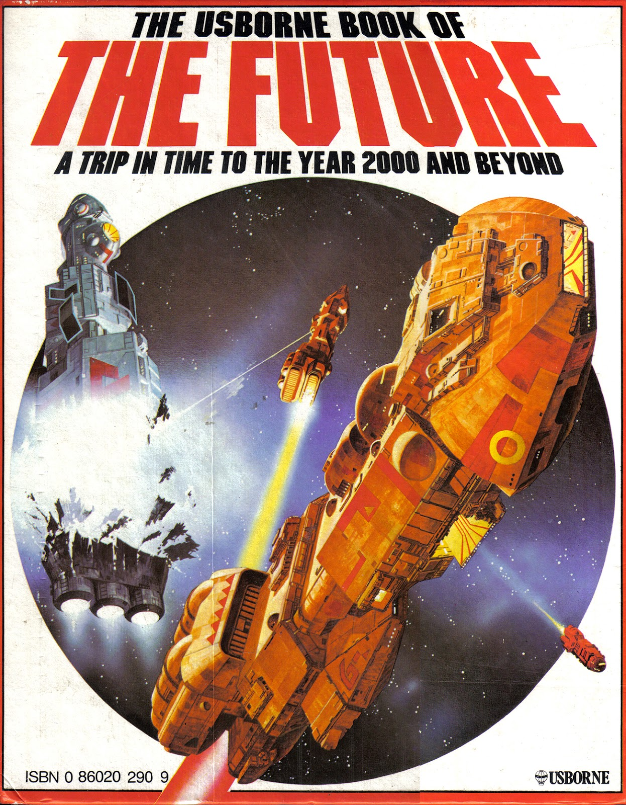
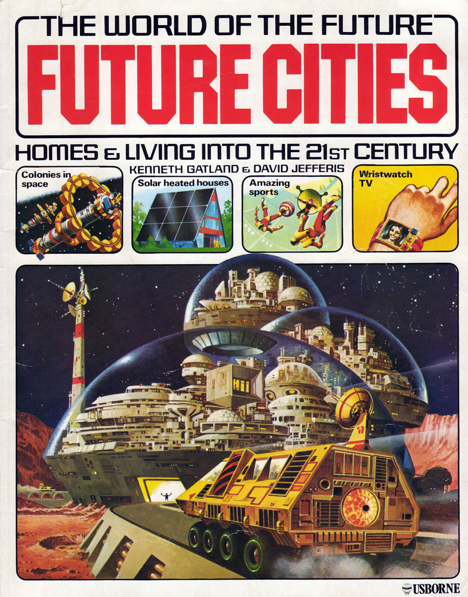
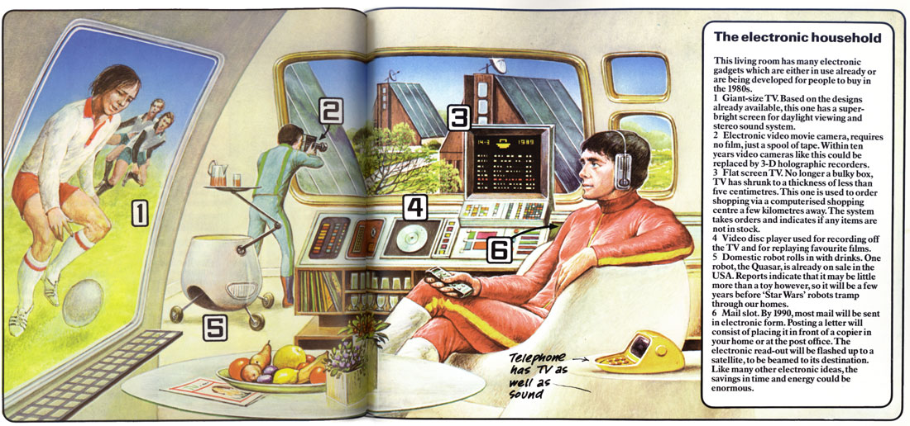
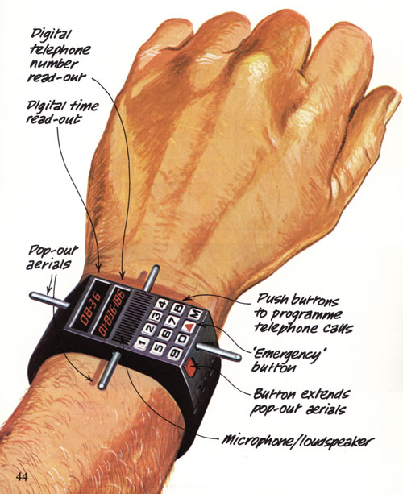
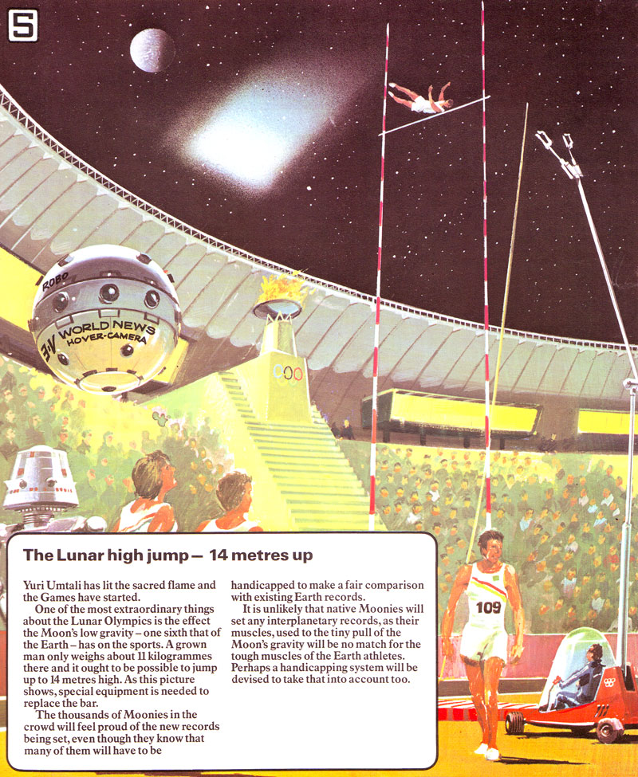
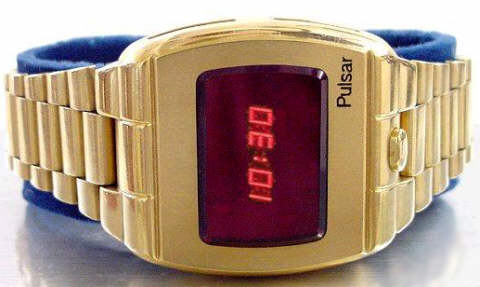
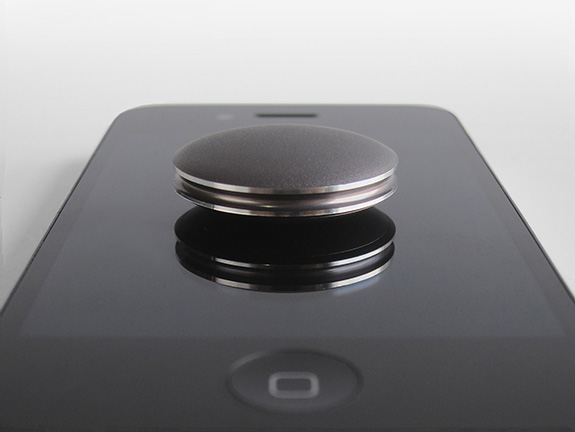
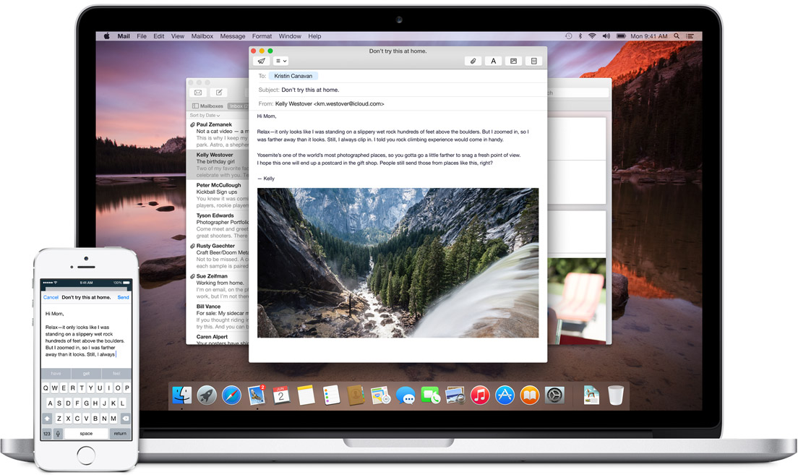

The Future, Yesterday
I'd like to start by talking about the future of the past.


The Usborne Book of the Future (1979), Future Cities (1979)

The Usborne Book of the Future (1979)

The Usborne Book of the Future (1979)

The Usborne Book of the Future (1979)

Your browser does not support the audio element.
Image: Crazywatches /
Audio: oldpulsars.com
The Hamilton Pulsar P1, released 1972, cost over $2,000.
"Wall Street" (1987)
The Motorola DynaTac 8000X, released 1983 for $3,995.
Raspbery Pi WikiMedia Commons image by Lucasbosch
This is the higher-end B+ model, which costs $35.

Indiegogo Campaign Photo
Misfit Shine has accelerometers, Bluetooth, and a battery that lasts for months.
Stanford
Stanford/Berkeley project.
No batteries — runs on energy from ambient radio waves.
No external antennas.
50cm range.
Will cost "a few cents" to make.
What's the fundamental unit of the Web?
The website?
What is a website made of?
The webpage?
The internet isn't made of pages.
That's yesterday talking.
How do we experience the web?
Noha نهى by Hossam el-Hamalawy
Designers and programs CREATE (and experience) websites on computers.
It's easy to get caught in the trap of assuming that this is how users
experience them.
With every day that goes by this gets farther from the truth.
People don't view your content on your website.
But that's not the only trap you've got to avoid. There's also this.
Let me say that again.
People.
Don't. View.
Your content.
On your website.
Why not?
I'll give you three reasons.
Syndication
RSS Throwboy by Jack Amick
Reason One: Syndication.
This used to mostly mean RSS.
Today it also means giving your content a life outside your website.
Use Case Fluidity

Photo via Mobify
Reason Three: Use Case Fluidity.
Consider: Device variety. Users might user anything to interact.
Consider: Device fluidity. Users aren't constrained to a single device even during a single ineraction. See: Apple's Handoff continuity between devices.
Don't try to control how people access your content.possible .
Compatibility - Standards
Semantics:
Microformats
ARIA
Etc.
But it's not just your content
Users expect to get their data in and out of your site.
Interchange formats
XML
JSON
YAML
And it's not just content and data portability
Your services have lives outside of your site.
Integration between services and APIs
Thank You
And See You In The Future
 Raspbery Pi WikiMedia Commons image by Lucasbosch
Raspbery Pi WikiMedia Commons image by Lucasbosch
{kind=link}
{kind=link}
{kind=link}